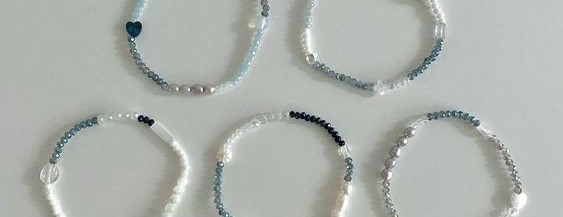

NOBStrap Bracelet



NOBStrap is a small business that was developed from a hobby followed by a trend. The beaded bracelets at NOBstrap are made with love so that they can satisfy consumers' hearts. We also offer the latest designs but are still pocket friendly. Hope you like our catalog, love.
BRACELET

We provide beaded bracelets in various models and shapes. Apart from that, we also provide various materials from elastic strings, ropes and chains.
PHONE STRAP

We provide telephone straps with various models. We use quality rope so it doesn't break easily. This telephone strap aims to ensure that the cellphone is held safely and to add aesthetic value.